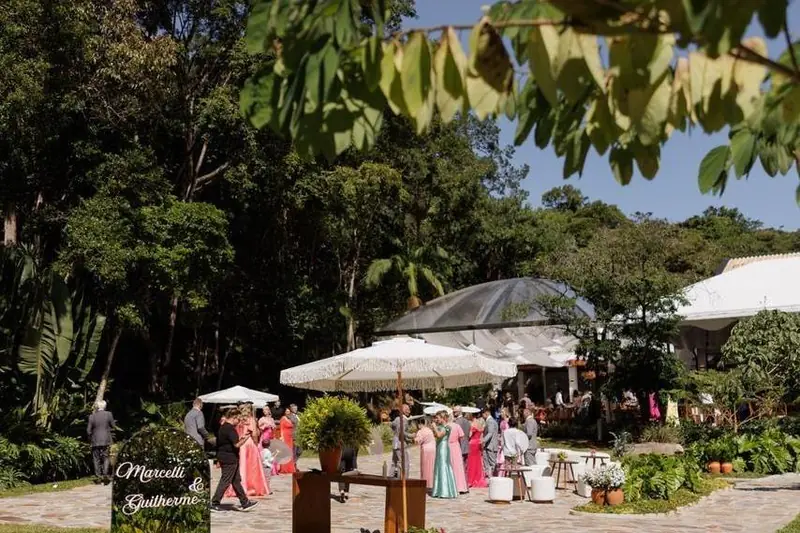
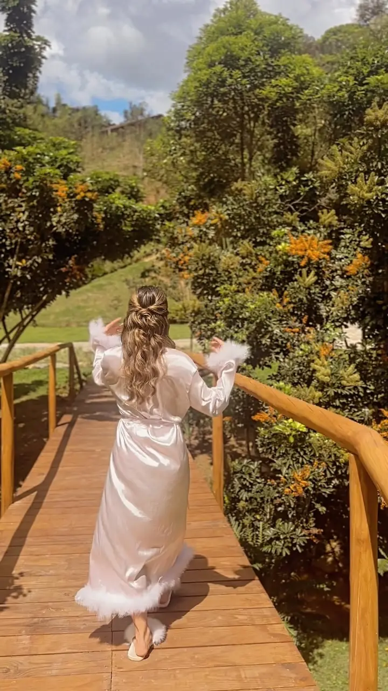
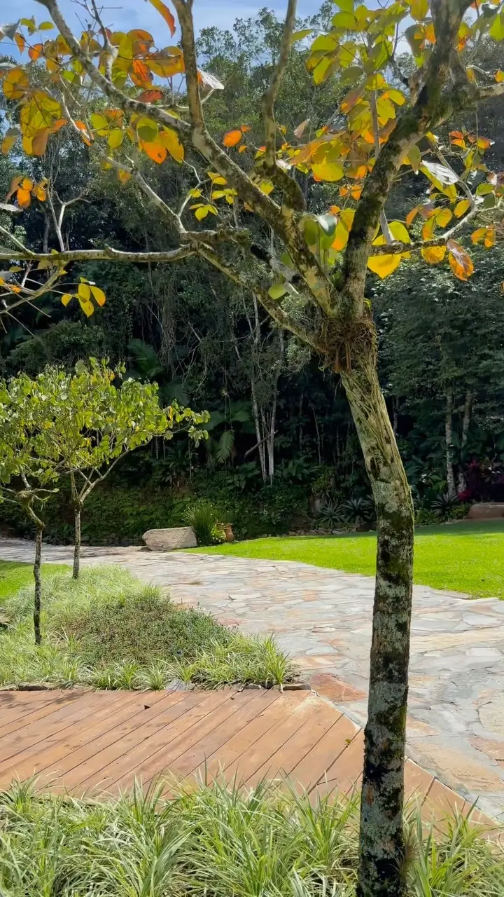
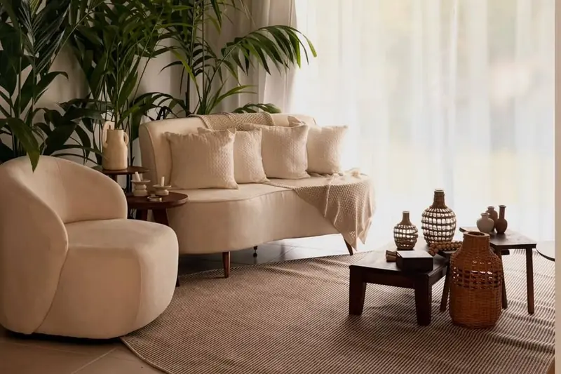
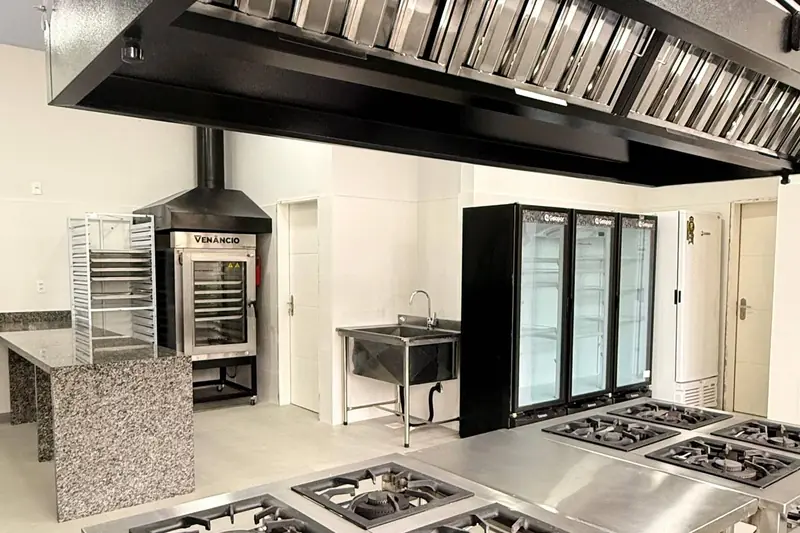
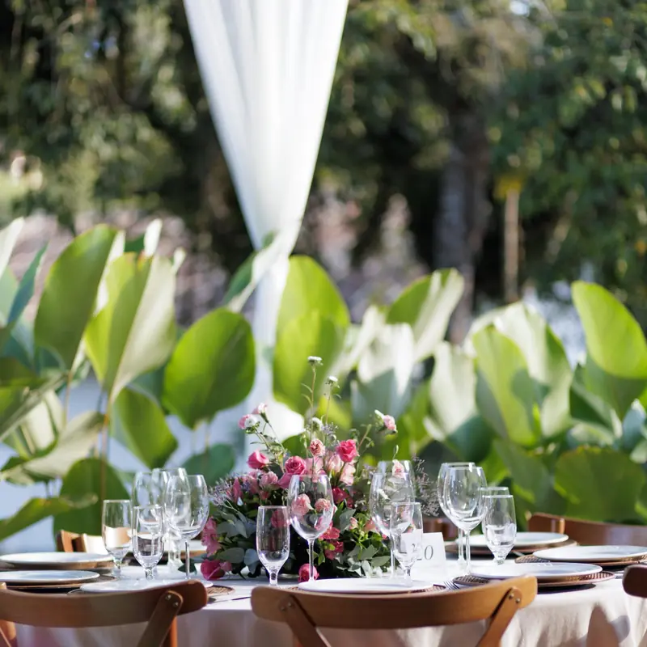
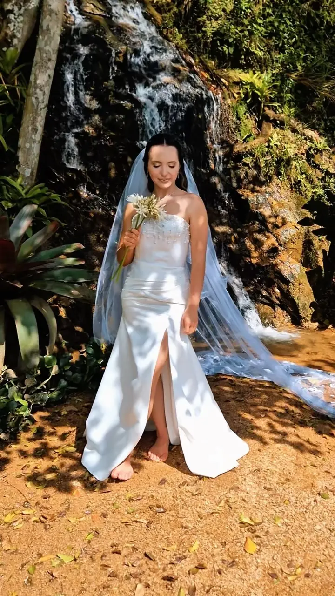

01
Essenza Garden
O jardim das cerimônias
Gramado, caminhos de pedra e canteiros desenhados para o “sim” ao ar livre, com a mata nativa e a cascata natural como pano de fundo.
Antônio Carlos · Grande Florianópolis
Arquitetura, paisagismo e hospitalidade para o dia mais importante da sua vida.
Manifesto
Antes de existir, a Chácara Manancial foi desenho, estudo e muitas madrugadas. Cada ambiente nasceu de uma pergunta simples: como alguém vai se sentir aqui?
Entre uma cascata natural, o som do riacho e a riqueza da flora tropical, a arquitetura contemporânea abre espaço para o que realmente importa: a sua história, as pessoas que você ama e um dia vivido sem pressa.
“A arquitetura ganha vida quando as pessoas passam a habitá-la.”
Bruna Pierri — arquiteta, paisagista e anfitriã


Os espaços
Cada ambiente foi projetado para se conectar ao outro, permitindo layouts que respeitam o estilo do casal, o clima do dia e a proposta de cada celebração.

O jardim das cerimônias
Gramado, caminhos de pedra e canteiros desenhados para o “sim” ao ar livre, com a mata nativa e a cascata natural como pano de fundo.

Com Ateliê da Noiva
Uma casa inteira dedicada às horas que antecedem a cerimônia: luz natural, ambientes acolhedores e um ateliê pensado para a noiva, as madrinhas e a equipe de beleza.
Integrado à natureza
Estrutura de madeira aparente, grandes aberturas de vidro e climatização. O salão se integra à Tenda Fixa e ao Solar, para a festa fluir entre os ambientes, faça sol ou frio.

Para quem faz a festa acontecer
Cozinha industrial completa, com estrutura em inox para buffet e equipe de serviço, além de amplos banheiros para convidados e fornecedores.
Paisagismo
O paisagismo é assinado por Bruna Pierri, arquiteta e paisagista que leva esse olhar também às suas palestras sobre o tema. Desde o primeiro plantio, cada muda é acompanhada de perto.
Folhagens tropicais, flores da estação e a mata nativa compõem uma paisagem viva, que ganha volume e muda de cor a cada estação. A cerimônia acontece dentro de um jardim que tem história.
“No paisagismo, o tempo é parte fundamental do projeto.”

Celebrações
Cerimônia no Essenza Garden e recepção que flui do jardim ao salão. Também para mini weddings.
Para casais e convidados que vêm de longe, perto de Florianópolis, das praias e da serra.
Bodas, aniversários e festas de 15 anos com a mesma atenção e exclusividade de um casamento.
Confraternizações, lançamentos e encontros de alto padrão, cercados por natureza.

Destination wedding
A Chácara Manancial fica na Grande Florianópolis: perto do aeroporto, das praias da Ilha e da serra catarinense. Seus convidados chegam fácil e aproveitam a viagem.
Cerca de 45 km, aproximadamente 55 minutos de carro. [A CONFIRMAR]
Pousadas rurais em Antônio Carlos, hotéis de águas termais em Santo Amaro da Imperatriz e a rede hoteleira de São José e Florianópolis. [A CONFIRMAR]
Indicamos parceiros de transporte entre hotéis e a chácara, com ida e volta no dia do evento. [A CONFIRMAR]
até 500
convidados
1
evento por dia, com exclusividade [A CONFIRMAR]
45km
do Aeroporto de Florianópolis [A CONFIRMAR]
Agenda
Os casais costumam reservar com bastante antecedência. Navegue pelos próximos 18 meses e toque em uma data para pedir seu orçamento.
Use as setas do teclado para navegar entre os dias e Enter para escolher.
Orçamento
Preencha os detalhes e enviaremos tudo organizado para o nosso WhatsApp. Você recebe o retorno da própria equipe da Chácara Manancial.
Depoimentos
[Depoimento real a inserir]
[Nome do casal] · [mês/ano do casamento]
[Depoimento real a inserir]
[Nome do casal] · [mês/ano do casamento]
[Depoimento real a inserir]
[Nome do casal] · [mês/ano do casamento]
Dúvidas
Não encontrou o que procurava? Fale com a gente pelo WhatsApp.
Os fornecedores são livres: buffet, fotografia, música e decoração ficam à escolha do casal. Também indicamos parceiros que já conhecem o espaço. [A CONFIRMAR]
O horário de término é combinado em contrato, de acordo com o formato do evento. Como recebemos um único evento por dia, há flexibilidade para estender a celebração. [A CONFIRMAR]
Sim. O salão climatizado, a Tenda Fixa e o Solar são cobertos e integrados, e a cerimônia pode ser transferida para uma área coberta sem perder a vista para o jardim. A decisão costuma ser tomada com o cerimonial na véspera. [A CONFIRMAR]
Claro, e recomendamos. As visitas são feitas com agendamento prévio pelo WhatsApp, de terça a sábado, com a própria equipe da chácara. [A CONFIRMAR]
A data é garantida com a assinatura do contrato e o pagamento de um sinal. O saldo pode ser parcelado até 30 dias antes do evento. [A CONFIRMAR]
Sim, há estacionamento interno para os convidados, além de área de carga e descarga para os fornecedores. [A CONFIRMAR]
Agende sua visita
Caminhe pelo jardim, ouça a cascata e imagine o seu dia. Agende uma visita e conheça a Chácara Manancial pessoalmente.
Agendar pelo WhatsAppLocalização